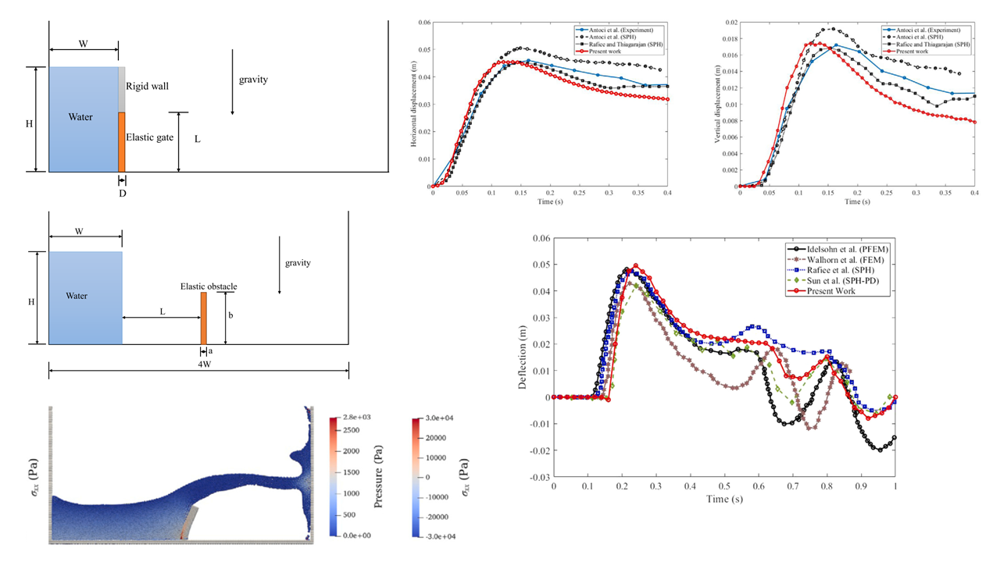

Current Research Areas
- Fracture Mechanics
- Computational Damage Mechanics
- Dynamic Fracture and Explosion using Meshfree Methods
- Behaviour of Composite Structures under Extreme Loading
- Molecular Dynamics
- Multiscale Modelling
- Fluid Structure Interaction
Research Highlights
Development of particle-based frameworks for high strain rate loading
Figure: Failure in metallic and ceramic plates due to projectile impact
An SPH-based computational framework is developed for studying the deformation and failure behaviour of brittle, ductile and composite armours under impact loading. Crack propagation is modelled through a pseudo-spring analogy wherein the interacting particles are assumed to be connected through pseudo springs, and the interaction is continuously modified through an order-parameter based on the accumulated damage in the spring. At the onset of crack formation, i.e., when the accrued damage reaches the critical value, the spring breaks which results in termination of interaction between particles on either side of the spring. A key feature of the computational model is that it can capture arbitrary propagating cracks without introducing any special treatment such as discontinuous enrichment, particle-splitting, etc. This computational framework is used herein to study adiabatic shear plugging in metal plates when modelling penetration under impact loading by a flat-ended, cylindrical projectile; different failure modes in metal plates under impact by sharp-nosed projectiles; arbitrarily oriented cracks, fragmentation and conoid formation of ceramics, etc. Computed results are compared with the experimental observation given in the literature, and the efficacy of the framework is demonstrated.
Relevant Papers:
- Islam, M.R.I., Chakraborty, S., Shaw, A. and Reid, S., "A Computational Model for Failure of Ductile Material Under Impact", International Journal of Impact Engineering, 108, 334-347, 2017 (doi.org/10.1016/j.ijimpeng.2017.04.005).
- Chakraborty, S., Islam, M.R.I., Shaw, A. Ramachandra L.S. and Reid, S.R., "A Computational Framework for Modelling Impact Induced Damage in Ceramic and Ceramic-Metal Composite Structures", Composite Structures, 164, 263-276, 2017 (doi.org/10.1016/j.compstruct.2016.12.064).

Figure: Multigrained graphene sheets, the setup for evaluating the elastic modulus, the post-damage behaviour, and the failure strain, the stress-strain behaviour in a single-grained graphene sheet and the crack propagation in different notch orientation.
Multiscale modelling with molecular dynamics and smoothed particle hydrodynamics
Most of the continuum scale processes, such as fracture, plasticity, etc., trace their origin to atomistic scale phenomena. To gain deeper insights into these processes, one needs to understand the behaviour of materials through the lens of multiscale methods. We study the problem of fracture crack propagation in different materials through a sequential multiscaling technique. The continuum-mechanical smoothed particle hydrodynamics (SPH) is coupled with the atomistic scale molecular dynamics (MD) simulations through proper constitutive modelling - the non-linear material properties and the mechanical equation of state which serve as the inputs to the SPH model are evaluated directly from the MD simulations. Such handshaking ensures that the continuum-scale SPH model is able to faithfully reproduce the atomistic scale stress-strain behaviour until failure.
Relevant Papers:
- Islam, M.R.I., Ganesh, K.V. and Patra, P.K., "On the Equivalence of Eulerian Smoothed Particle Hydrodynamics, Total Lagrangian Smoothed Particle Hydrodynamics and Molecular Dynamics Simulations for Solids", Computer Methods in Applied Mechanics and Engineering, 391, 114591, 2022 (doi.org/10.1016/j.cma.2022.114591).
- Bhattacharyya, S., Islam, M.R.I. and Patra, P.K., "Multiscale modelling of fracture in graphene sheets", Theoretical and Applied Fracture Mechanics, 122, 103617, 2022 (doi.org/10.1016/j.tafmec.2022.103617).

Figure: Deformation of elastic structures under hydrodynamic loading.
Fluid-structure interaction problems with finite deformation and fracturing
Understanding crack propagation in structures subjected to fluid loads is crucial in various engineering applications, ranging from underwater pipelines to aircraft components. In this work, a computational framework is proposed to investigate the dynamic response of structures, including their damage and fracture behaviour under hydrodynamic load. The proposed framework employs weakly compressible smoothed particle hydrodynamics (SPH) to model the fluid flow and a pseudo-spring-based SPH solver for modelling the structural response. The \delta-SPH technique is implemented to enhance pressure calculations within the fluid phase. The pseudo-spring analogy is employed for modelling damage, where particle interactions are confined to their immediate neighbours. These particles are linked by springs, which do not contribute to system stiffness but determine the interaction strength between connected pairs. It is assumed that a crack propagates through a spring connecting a particle pair when the damage indicator of that spring exceeds a predefined threshold. The proposed framework is extensively validated through existing experimental and numerical data from the literature. The ability of the framework to accurately depict large material deformation, damage and fracture behaviour under hydrodynamic loads is showcased through a few numerical simulations.